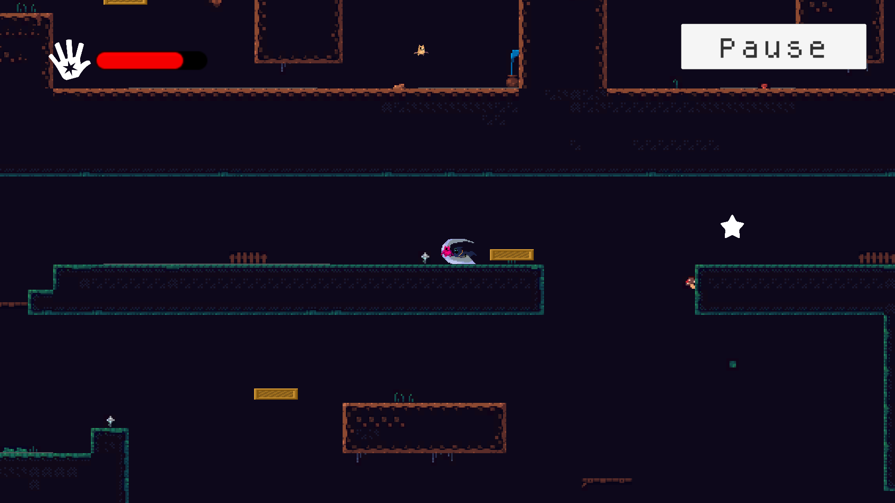

The Last Star Lord
Overview
The Last Star Lord is a 2d action adventure game. Your goal is to fight your way to the evil Star Lord's hideout and destroy him. Then become the last Star Lord. You will have to fight various monsters and navigate through many complex terrains to reach the hideout.
This project was made to compete in the BUV 2022 Game Jam event - the game had to be made in 44 hours and based on "Star" theme.
Mechanics and Features
"Star Force" - a player's skill that shoot a yellow star that can pull or push monsters and interactable object. If the yelloe star hits the target, player can use A key to pull the target to player's direction or D key to push the target away.
"Star Light" - a player's skill that shoot a blue star that make a special type of monsters become vulnerable.